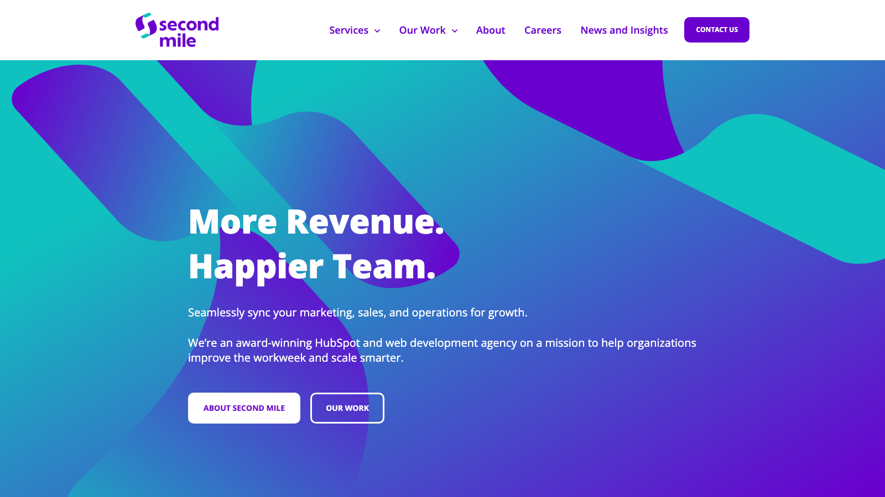

Second Mile is an award-winning RevOps and HubSpot agency. The moment a deal closes won, the onboarding we run for them builds itself: the engagement record, the matched team, the folders, the kickoff deck, the task plan. One click of approve. That is the process.

An agency's most dangerous week is the one right after a client says yes. Somebody has to create the records, pick the team, build the folders, write the kickoff deck, assign the work. Every step is copy-paste, and every step can quietly not happen.
For an ops agency that sells clean operations, a scrappy onboarding is not just slow. It is off-brand.
One trigger, in their own CRM. Everything below happens on its own, with one human approval in the middle, exactly where judgement belongs.
Judgement stays human. The busywork does not.
Every new client starts with the same clean first week, because no part of it depends on somebody remembering.
This is the same operator that runs the content plans on this site, pointed at an internal process. If your team re-types the same onboarding every time, that is a system waiting to exist.
Book a call See the other case studies